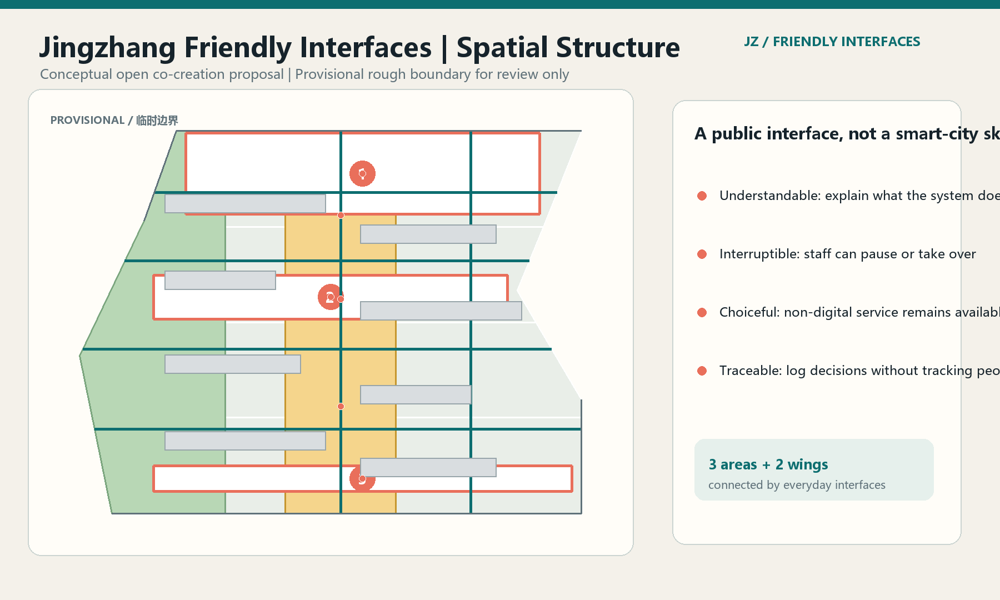
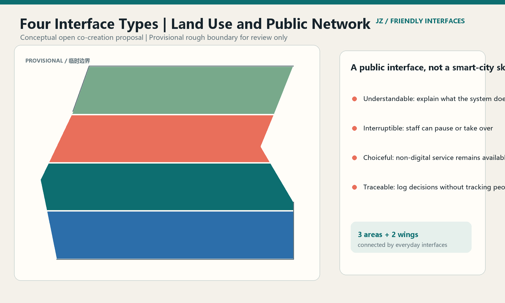
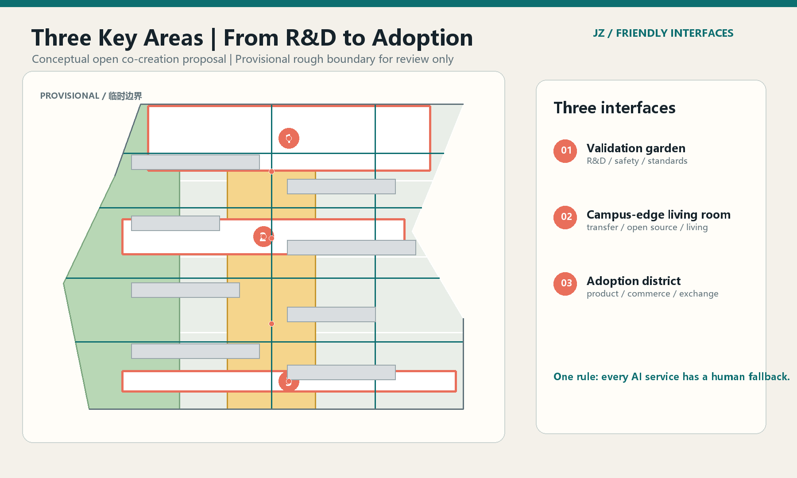
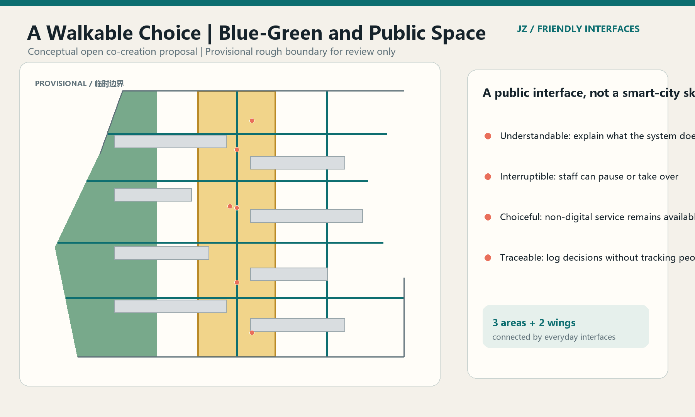
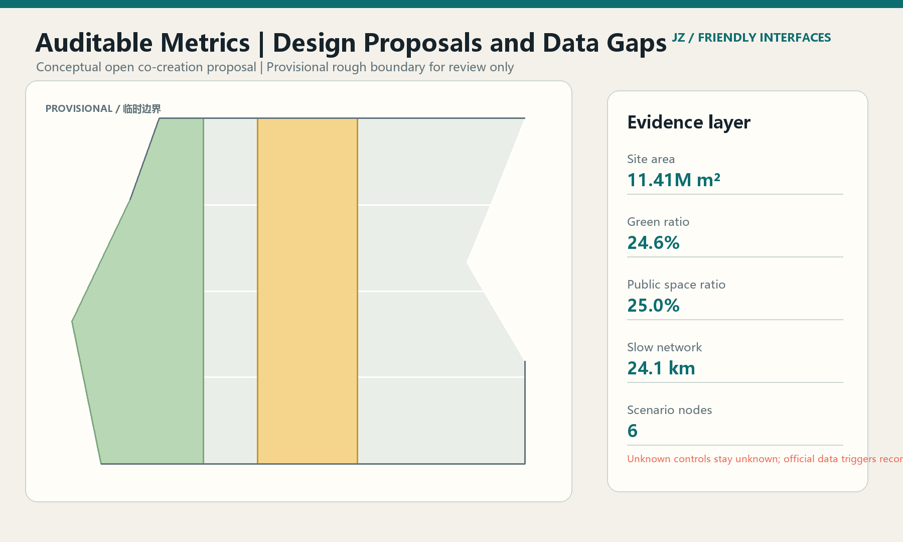

Jingzhang Friendly Interfaces
PROVISIONAL CONCEPT
Spatial overview / 总览地图

The interface rule
AI in the belt should be legible before it is impressive. People can understand the service, choose whether to use it, and reach a human fallback at every node.
3 areas + 2 wings
connected by daily public interfaces rather than a single spectacular object.
Three-level scope / 三层范围 · Key areas / 重点区域
Coordinated research, overall design, and detailed design are connected through three differentiated areas and two service wings.
Auditable snapshot / 核心指标
Four public-interface commitments
Explain
Every service states purpose, data boundary, and operator.
Interrupt
A person can pause, override, or route to offline service.
Choose
The city remains usable without a smart account or phone.
Account
Aggregate logs support review without tracking individual lives.
Land-use zoning / 用地分区 · Mobility / 交通慢行 · Blue-green public space / 蓝绿公共空间
Land use and public network / 用地分区

Three key areas / 重点区域

Mobility and blue-green / 交通慢行与蓝绿公共空间

Metrics and data gaps / 核心指标

Key-area program
| Area | Spatial interface | AI emphasis |
|---|---|---|
| Zhongzhiyuan | Validation garden | R&D, standards, safety governance |
| AI Origin Community | Campus-edge living room | Transfer, open source, talent daily life |
| Dazhongsi | Adoption district | AI-native products, commerce, exchange |
Buildings / 建筑 · Renewal projects / 更新项目 · AI scenarios / AI 场景
Retain, renovate, and lightweight new-build actions remain conceptual. Ten scenario cards, three industrial tests, and five personas are described in the report.
Task coverage / 任务覆盖 · Self-check status / 自检状态
The package maps the announcement tasks, agent.1-agent.6, professional standards, geometry, metrics, and visual files. Current status: provisional boundary, pending official-data recomputation.